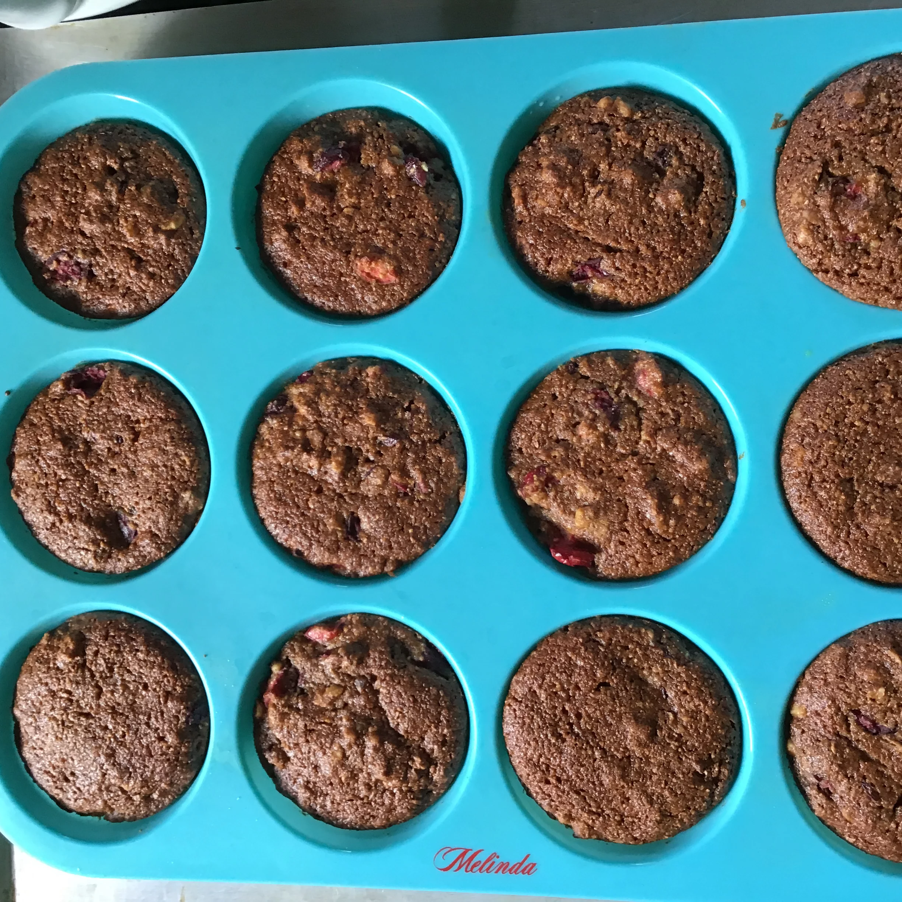

Whole Wheat Pumpkin Bread

Description
Nicely spiced with cloves, cinnamon, nutmeg, and pumpkin, this bread is moist and delicious! Makes 1 loaf or 18 muffins.
Ingredients
- ½ cup raisins
- ⅔ cup all-purpose flour
- 1 teaspoon ground cinnamon
- ½ teaspoon baking powder
- ½ teaspoon salt
- ½ teaspoon ground cloves
- ½ teaspoon ground nutmeg
- 1 cup pumpkin puree
- 1 cup white sugar
- 1 cup coarsely chopped walnuts
Steps
- Preheat the oven to 375 degrees F (190 degrees C).
- Place raisins in a bowl and pour in boiling water to cover by 1 inch. Allow to sit until raisins are plump and rehydrated, 3 to 4 minutes. Drain raisins, and reserve 1/3 cup of the soaking water in a separate bowl.
- Combine whole wheat flour, all-purpose flour, cinnamon, baking soda, baking powder, salt, cloves, and nutmeg in a large bowl. Combine pumpkin puree, sugar, eggs, reserved soaking water, and oil in another bowl; mix with a spoon or whisk until well combined. Stir pumpkin mixture into flour mixture until just moistened. Fold in walnuts and raisins. Pour batter into a 9x5-inch loaf pan.
- Bake in the preheated oven until a toothpick inserted into the center comes out clean, 50 to 55 minutes. Allow to cool in the pan for 15 minutes then transfer to a wire rack.